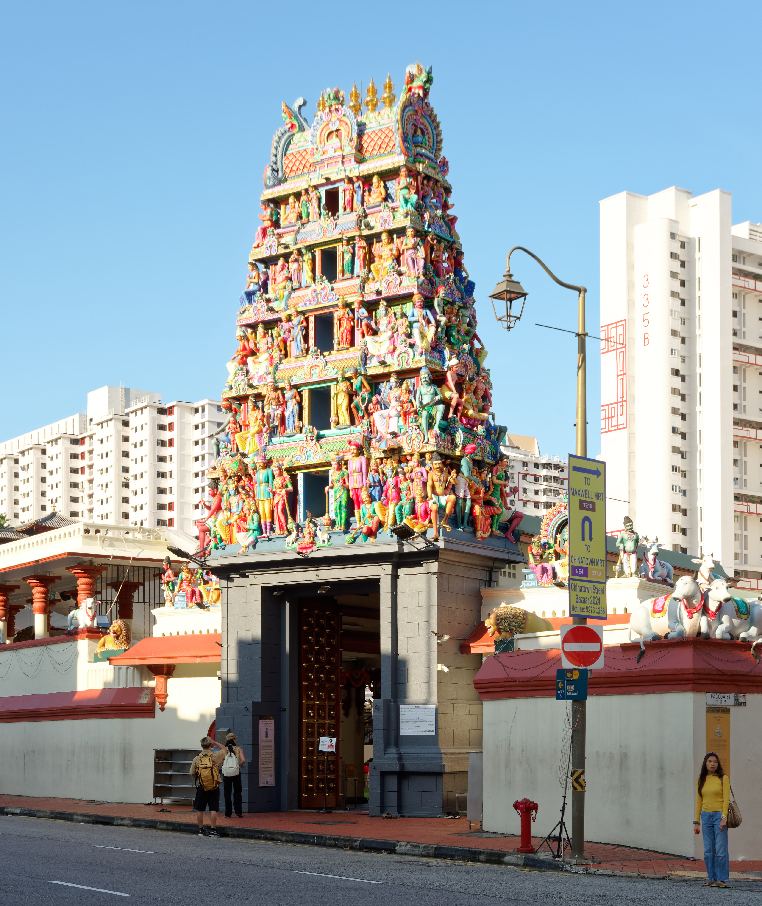

A living tradition. An open invitation.
Find your own
way into Hinduism.
From the questions that shape a life to the places that bring people together. Explore a tradition with many voices, stories and paths.
IDEAS · STORIES · LIVING TRADITIONSSingapore edition / 01

Where would you like to begin?
01 / UNDERSTAND
The big questions.
Dharma, karma and the search for liberation. Start with ideas, not assumptions.
↗02 / DISCOVERStories with depth.
Meet the deities, symbols and narratives that carry generations of meaning.
↗03 / EXPERIENCESacred, and nearby.
Explore Singapore’s temples and the communities that give them life.
↗Many expressions, no single template
Not one book.
Not one founder.
Not one way to belong.
Hindu traditions encompass different philosophies, devotional communities and regional practices. This guide introduces recurring themes while leaving room for their differences.